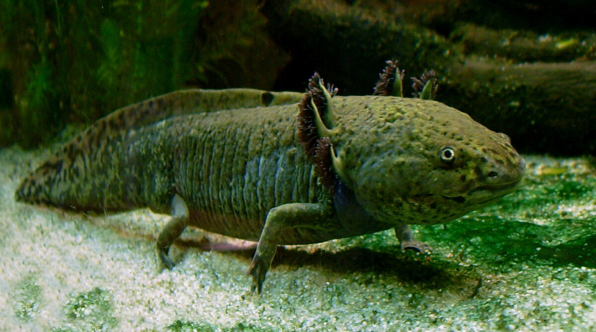

Complete Amphibian Care Guide
Expert guidance for amphibian keepers covering frogs, toads, salamanders, newts, and axolotls. Get AI-powered help with terrarium setup, humidity management, feeding schedules, health concerns, and species-specific care for all popular pet amphibians.
Last reviewed and updated: March 2026. Amphibian care content verified against current ARAV guidelines and species-specific husbandry research from the Journal of Herpetological Medicine and Surgery.
Why Amphibian Keepers Trust Us
Amphibians are uniquely sensitive animals with specialized care requirements that differ dramatically from reptiles and other pets. Our AI-powered amphibian care assistant helps you master the delicate balance of humidity, temperature, and water quality that these remarkable creatures need to thrive.
Whether you're setting up your first dart frog vivarium, troubleshooting your axolotl's water parameters, or learning to care for a Pacman frog, our platform provides clear, science-based guidance tailored to your specific species and enclosure type.
We help you understand species-specific requirements, proper supplementation, and connect you with quality supplies from trusted amphibian and reptile brands like Zoo Med and Exo Terra.
Get Instant Amphibian Care Help
Our AI assistant is trained on thousands of amphibian care resources and can help with species identification, habitat setup, feeding schedules, health concerns, and emergency situations. Ask any question about your pet frog, toad, salamander, newt, or axolotl.
Browse Amphibian Species
Explore detailed care guides for 20 popular pet amphibian species. Each profile covers habitat setup, diet, temperature and humidity requirements, handling guidelines, and common health concerns.
Axolotl
The iconic Mexican walking fish - a fully aquatic salamander known for its feathery gills and remarkable regeneration abilities. Requires cool water at 60-68F and a cycled aquarium.
African Clawed Frog
Hardy, fully aquatic frog with distinctive clawed hind feet. Easy to care for, long-lived (up to 20 years), and active swimmers that thrive in room-temperature water.
African Dwarf Frog
Tiny, fully aquatic frog ideal for small heated aquariums. Social species best kept in groups. Often confused with African clawed frogs but much smaller and gentler.
Pacman Frog
Rotund, colorful ambush predators named for their enormous mouths. Low-maintenance terrestrial frogs that spend most of their time burrowed in substrate waiting to ambush prey.
Red-Eyed Tree Frog
Stunning nocturnal tree frog with vibrant red eyes and bright green body. Requires a tall, humid tropical vivarium with live plants and branches for climbing.
White's Tree Frog
Docile, chubby tree frog and one of the best beginner amphibians. Tolerates handling better than most frogs and adapts well to captivity. Also called dumpy tree frog.
American Green Tree Frog
Bright green, slender tree frog native to the southeastern United States. Active, vocal, and relatively easy to keep. Males produce a distinctive rainy-night call.
Tomato Frog
Brilliantly colored red-orange terrestrial frog from Madagascar. Relatively sedentary and easy to care for. Can secrete a sticky white substance when stressed as a defense mechanism.
Fire-Bellied Toad
Small, active semi-aquatic toad with a vivid red-and-black belly used as a warning display. Best kept in a paludarium with both land and water areas. Social and best in groups.
Fire-Bellied Newt
Hardy semi-aquatic newt with an orange-red belly warning pattern. Thrives in cool, well-filtered aquariums with a land area. Long-lived species reaching 15-20 years in captivity.
Eastern Newt
North American native with a fascinating three-stage life cycle including a bright orange juvenile eft stage. Semi-aquatic adults prefer cool, planted aquariums with gentle filtration.
Tiger Salamander
One of the largest terrestrial salamanders, reaching up to 13 inches. Bold patterning in yellow and black. Personable and interactive, these burrowers need deep, moist substrate.
Fire Salamander
Striking European salamander with bold black and yellow warning coloration. Terrestrial species preferring cool, moist woodland-style terrariums. Long-lived, often exceeding 20 years.
Dart Frog
Jewel-like poison dart frogs (non-toxic in captivity) prized for incredible colors. Require elaborate bioactive vivariums with live plants, springtails, and isopods. Small but bold and diurnal.
Gray Tree Frog
North American tree frog capable of changing color from gray to green. Cold-hardy species with a distinctive trilling call. Requires a tall, planted terrarium with climbing surfaces.
Budgett's Frog
Unusual aquatic frog with a flat body, wide mouth, and comically grumpy expression. Known for defensive screaming when threatened. Semi-aquatic setup with shallow warm water needed.
Surinam Toad
Bizarre, flat-bodied fully aquatic toad famous for its unique reproduction where eggs develop embedded in the mother's back. Requires a warm, well-filtered aquarium with hiding spots.
Spring Peeper
Tiny North American tree frog known for its iconic early-spring chorus. Measures less than 1.5 inches. Requires cool temperatures, high humidity, and small feeder insects like fruit flies.
American Bullfrog
The largest North American frog, reaching over 8 inches. Powerful, voracious predators requiring a large semi-aquatic enclosure. Not recommended for beginners due to size and feeding demands.
Chinese Fire Belly Newt
Popular beginner newt with a bright orange-red belly and dark dorsal coloring. Semi-aquatic, preferring cool water with a land area. Social species best kept in small groups.
Amphibian Care Basics
Amphibians have unique care requirements that differ significantly from reptiles and fish. Understanding these fundamentals is essential for keeping your pet healthy.
Humidity & Moisture Management
Amphibians breathe and absorb water through their skin, making humidity one of the most critical care factors.
- Tropical species (dart frogs, red-eyed tree frogs): 80-100% humidity
- Temperate species (tree frogs, toads): 60-80% humidity
- Aquatic species (axolotls, African dwarf frogs): Fully submerged in dechlorinated water
- Monitoring: Always use a digital hygrometer - analog gauges are unreliable
- Maintaining humidity: Misting systems, foggers, large water dishes, moisture-retaining substrates (coconut fiber, sphagnum moss), and glass enclosures with partial screen tops
Temperature Requirements
Most pet amphibians prefer cooler temperatures than reptiles. Overheating is a common and dangerous mistake.
- Tropical frogs: 72-80F daytime, 65-72F nighttime
- Temperate salamanders and newts: 60-68F (avoid temperatures above 72F)
- Axolotls: 60-68F (temperatures above 72F can be fatal)
- Fire-bellied toads: 68-75F daytime, slight drop at night
- Heating: Use low-wattage heat mats on thermostats if needed - never heat lamps directly on the enclosure
- Cooling: Aquarium fans, chillers for aquatic species, and placement in cool rooms
Feeding & Nutrition
Most pet amphibians are insectivores requiring live prey. Proper supplementation is essential to prevent metabolic bone disease.
- Staple feeders: Gut-loaded crickets, dubia roaches, earthworms, black soldier fly larvae
- Small species: Flightless fruit flies, springtails, pinhead crickets
- Large species: Nightcrawlers, hornworms, occasional pinky mice (Pacman frogs, bullfrogs)
- Aquatic species: Earthworms, bloodworms, sinking pellets (axolotls), brine shrimp
- Supplements: Dust feeders with calcium + D3 every feeding; multivitamin 1-2 times per week
- Frequency: Juveniles daily; adults every 2-3 days (species-dependent)
Handling Guidelines
Amphibians are largely observe-only pets due to their sensitive, permeable skin.
- Minimize handling: Oils, salts, and chemicals on human skin can harm amphibians
- When necessary: Wet hands with dechlorinated water before touching
- Never handle: Dart frogs, fire-bellied toads, and newts secrete skin toxins
- More tolerant species: White's tree frogs and Pacman frogs tolerate brief, infrequent handling
- After handling: Always wash hands thoroughly - some amphibian secretions irritate eyes and mucous membranes
Chytrid Fungus: Critical Health Warning
Chytridiomycosis (Batrachochytrium dendrobatidis or Bd) is a devastating fungal disease that has driven dozens of amphibian species to extinction worldwide.
All amphibian keepers must be aware of chytrid fungus and take steps to prevent its spread.
Signs of Chytrid Infection
- Excessive skin shedding or skin that appears thickened, discolored, or rough
- Lethargy, loss of appetite, and abnormal posture
- Loss of righting reflex (inability to flip back over if turned upside down)
- Reddened or ulcerated skin, especially on the belly and feet
- Sudden death with no other obvious symptoms
Prevention Measures
- Quarantine: Isolate all new amphibians for at least 30-60 days before introducing to existing collection
- Biosecurity: Wash hands and disinfect equipment between handling different amphibians
- Source responsibly: Purchase only captive-bred animals from reputable breeders
- Never release: Never release pet amphibians into the wild - this spreads disease to native populations
- Veterinary testing: New animals can be tested for Bd via skin swab
Other Common Amphibian Health Issues
- Metabolic bone disease (MBD): Caused by calcium/D3 deficiency - ensure proper supplementation
- Bacterial skin infections: Red, inflamed, or ulcerated skin - caused by poor water quality or injuries
- Bloating/edema: Swelling from fluid retention - can indicate kidney failure or bacterial infection
- Fungal infections: White, cotton-like growths on skin - isolate and treat with antifungals
- Parasites: Internal parasites common in wild-caught animals - fecal testing recommended
Important: Amphibians hide illness well. By the time symptoms are visible, the condition may be advanced. Find an exotic veterinarian experienced with amphibians before an emergency arises.
Trusted Amphibian Supply Partners
People Also Ask: Amphibian Care Questions
What Humidity Level Does My Pet Frog Need?
Humidity is the single most important environmental factor for amphibians. Their permeable skin absorbs moisture directly from the air and substrate.
Humidity requirements by species type:
- Tropical tree frogs (red-eyed, dart frogs): 80-100%
- Subtropical frogs (White's tree frog, American green tree frog): 60-80%
- Terrestrial frogs (Pacman frog, tomato frog): 60-80%
- Temperate species (gray tree frog, spring peeper): 60-75%
How to maintain humidity:
- Mist with dechlorinated water 1-3 times daily (or use automatic misting system)
- Use moisture-retaining substrate: coconut fiber, sphagnum moss, ABG mix
- Include a large, shallow water dish
- Limit screen ventilation (glass enclosures with partial screen tops work best)
- Add live plants to increase natural humidity cycling
Why Is My Axolotl Floating and Not Eating?
Floating is abnormal for axolotls and can indicate several issues:
- Swallowed air: Axolotls sometimes gulp air at the surface, causing buoyancy issues
- Constipation or impaction: From eating gravel or overfeeding
- Poor water quality: Ammonia or nitrite spike (test immediately)
- Temperature too high: Must be below 68F; above 72F is dangerous
Treatment (fridging method):
- Test water parameters - ammonia and nitrite must be 0 ppm
- If water is fine, place axolotl in a clean tupperware with dechlorinated water
- Refrigerate at 40-45F - change water daily
- Fast the axolotl for 3-5 days during fridging
- If no improvement after 48-72 hours, consult an exotic vet
Do Amphibians Need UVB Lighting?
This is debated among keepers, but current research supports UVB benefits for many amphibian species.
- Diurnal species (dart frogs, fire-bellied toads): Benefit from low-level UVB (2.0-5.0 strength)
- Nocturnal species (Pacman frogs, tree frogs): May benefit from low UVB but not strictly required if supplementing D3
- Aquatic species (axolotls): Do not need UVB and may be stressed by bright lighting
- Salamanders: Generally do not need UVB; prefer dim conditions
If not providing UVB, you must supplement with calcium containing vitamin D3 at every feeding to prevent metabolic bone disease.
Can I Keep Different Amphibian Species Together?
Mixing amphibian species is generally not recommended for several important reasons:
- Disease transmission: Different species carry different pathogens that may be harmless to one but deadly to another
- Skin toxins: Many amphibians produce skin secretions toxic to other species
- Size differences: Larger species will eat smaller ones
- Different requirements: Temperature, humidity, and water quality needs often conflict
- Stress: Interspecies housing increases stress, weakening immune systems
Exceptions with caution: Some keepers successfully keep groups of the same species (e.g., multiple dart frogs, groups of fire-bellied toads). Research species-specific social requirements before cohabitation.
How Often Should I Clean My Amphibian's Enclosure?
Maintenance frequency depends on enclosure type:
- Bioactive vivariums (dart frogs, tree frogs): Spot-clean weekly; full substrate replacement rarely needed if cleanup crew (springtails, isopods) is established
- Non-bioactive terrariums: Spot-clean waste daily, full substrate change monthly
- Aquatic setups (axolotls, aquatic frogs): 20-25% water changes weekly, gravel vacuum, filter maintenance monthly
- Semi-aquatic setups (fire-bellied toads, newts): Clean water section weekly, spot-clean land area daily
Important: Never use soap, bleach, or chemical cleaners on amphibian enclosures without thorough rinsing. Residues are absorbed through their skin. Use hot water or amphibian-safe disinfectants only.
Common Amphibian Care Topics
Our AI assistant can help with these frequently asked amphibian questions:
- My frog isn't eating — what should I do?
- How do I set up a bioactive vivarium for dart frogs?
- Why is my axolotl's gill fluff shrinking?
- What substrate is safe for my salamander?
- My tree frog has cloudy eyes — is it shedding or sick?
- How do I gut-load feeder insects properly?
- What water conditioner is safe for amphibians?
- Can I keep fire-bellied toads with fish?
Amphibian Emergency Warning Signs
Take immediate action if you observe:
- Reddened, ulcerated, or bleeding skin (bacterial infection or chytrid)
- White or gray fuzzy patches on skin (fungal infection)
- Severe bloating or fluid retention (edema - organ failure possible)
- Lethargy with loss of righting reflex (cannot flip itself over)
- Complete refusal to eat for more than 2 weeks (adults)
- Rapid weight loss or visible bone structure through skin
- Limb deformities, tremors, or jaw softening (metabolic bone disease)
First response: Check temperature and humidity immediately. For aquatic species, test water parameters. Isolate sick animals from healthy ones. Contact an exotic veterinarian experienced with amphibians as soon as possible.
You Might Also Like
Cost Calculator
Estimate annual amphibian care costs
Breed Finder
Find the right amphibian species for you
Dog Care Guide
Expert guidance for dog owners
Cat Care Guide
Expert guidance for cat owners
Bird Care Guide
Expert guidance for bird owners
Pet Adoption Guide
Finding and adopting the right pet
New Pet Checklist
Complete preparation guide
Toxic Foods Master List
Substances dangerous to pets
Disclaimer
The information provided is educational and intended to help amphibian keepers maintain healthy animals. Amphibians have specialized veterinary needs. For serious health issues, consult with an exotic veterinarian experienced in amphibian medicine. Never release pet amphibians into the wild.